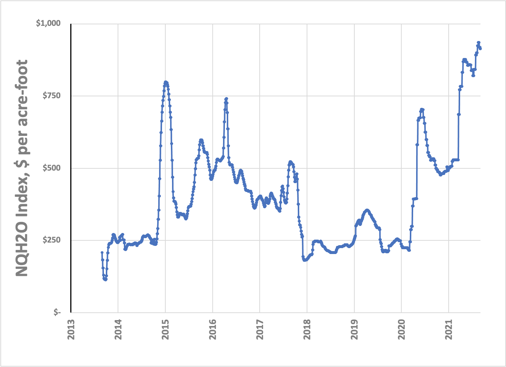

I’m Jonathan Burbaum, and this is Healing Earth with Technology: a weekly, Science-based, subscriber-supported serial. In this serial, I offer a peek behind the headlines of science, focusing (at least in the beginning) on climate change/global warming/decarbonization. I welcome comments, contributions, and discussions, particularly those that follow Deming’s caveat , “In God we trust. All others, bring data.” The subliminal objective is to open the scientific process to a broader audience so that readers can discover their own truth, not based on innuendo or ad hominem attributions but instead based on hard data and critical thought.
You can read Healing for free, and you can reach me directly by replying to this email. If someone forwarded you this email, they’re asking you to sign up. You can do that by clicking here .
If you really want to help spread the word, then pay for the otherwise free subscription. I use any fees to increase readership through Facebook and LinkedIn ads.
Today’s read: 8 minutes.
Under heaven nothing is more soft and yielding than water.
Yet for attacking the solid and strong, nothing is better;
It has no equal.
The weak can overcome the strong;
The supple can overcome the stiff.
Under heaven everyone knows this,
Yet no one puts it into practice.
Therefore the sage says:
He who takes upon himself the humiliation of the people
is fit to rule them.
He who takes upon himself the country's disasters deserves
to be king of the universe.
The truth often seems paradoxical.Tao Te Ching ( The Canon of Reason and Virtue ), by Lao Tzu ( Old Master) , Chapter 78. (translation by Gia-fu Feng and Jane English ). The origin is believed to be 6th Century BC
This introductory quote starts with the awesome power of water to create change despite its fluid character, which resonates with the current theme. It ends with the apparent paradoxical nature of truth. In Chinese, it is 正言若反, and there are many possible translations, but mine is that “The truth is more complicated than the words we use to describe it.” True that.
The story continues…
Let’s reiterate what the problem is. Stated concisely:
-
The increase in carbon dioxide levels in the atmosphere, attributable to human extraction and combustion of geologic carbon over 350 years of industrialization, threatens to destabilize Earth’s climates.
To solve this problem, we must somehow control the Earth’s atmosphere. Specifically, we need to adjust the amount of carbon dioxide it contains if we expect to regulate the planet’s temperature. Regardless of how you slice it, adjusting Earth’s “thermostat” will require “ geoengineering ”, in other words, an intentional process of applying human ingenuity (backed by Science). We also know that decarbonization, at least as far as we’ve taken it, is as (in)effective as a rain dance—Some tribes among us fervently believe that they’re doing something to change the outcome (those “addressing” climate change). But, they’ve failed to connect the effort required to the outcome desired. Regardless, even if decarbonization were completely successful and implemented tomorrow, we can’t undo the past. We can only keep the problem from getting worse. To regulate the thermostat, we have to implement technologies that remove carbon dioxide from the atmosphere.
In the last installment, I established that the best solution to carbon dioxide control is also the simplest and most natural. All that’s needed is to move water from the oceans to dry land--this will naturally increase the total photosynthetic capacity of Earth and reverse the effect of combustion. Of course, it’s not the only choice we have. It’s just one that fits both the data and our expectations of environmental friendliness. That’s what this installment, and subsequent ones, are about.
In this installment, let’s clarify the meaning of “cost” and why data analysis here is both obvious and difficult. It’s obvious because everyone wants the cheapest approach, and any financial measurement is 100% quantitative, eventually. It’s difficult because hard data about cost is closely guarded, frequently imprecise, and generally impossible to obtain with full transparency. Public analyses use either published prices or aggregate values provided through surveys. Sleuthing out costs is one reason that Wall Street financial analysts make good money! As a relevant example, experts have estimated that it costs Saudi Arabia only $2.80 to produce a barrel of oil 1 . Oil shale, at the other end, costs around $40 for the same barrel. The price isn’t determined by the cost but by the market, yet we often conflate the two.
Since we’re asking about the value of a “social good”, to figure out the maximum cost, we should ask instead, “What are people willing to spend to remedy the climate problem?” This begs a second question, “Who should pay for it?’ There is universal agreement on these answers: “As little as possible” and “Someone else.” I’m only half-joking–if you listen to the ecobabble, even the greenest industry believes that personal responsibility means that individuals will pay more for the same goods or services. In contrast, many individuals and academics think multinationals and energy companies should pay to clean up the mess “they” created. The developing world blames the developed world, and China and the United States blame each other. Ultimately, it’s a pointless exercise that only leaves the problem to fester--it’s a circular firing squad of global proportions. We need to accept the inconvenient truth, now, that if there’s a price to be paid to solve everyone’s problem, then everyone will need to pay for it one way or another. And using one’s money for any purpose automatically precludes it from being used for another purpose, so there’s got to be a tradeoff.
The advocates of using economic leverage to “solve” climate change love to discuss placing a “price on carbon”, ostensibly, to force the producers of carbon dioxide to pay for its removal. I see at least two structural problems: First, taxation is local and is paid to regional governments. Consequently, this structure means that money is passed through government hands. To become a practical solution, governments should be obligated to use that money to pay for carbon removal so that the costs balance out eventually. But, of course, that’s not what happens in practice. While taxation may incentivize adopting alternatives to geologic carbon based on hard economics, governments can’t direct the money toward the problem it’s intended to solve because removal technologies don’t exist yet! From a business finance perspective, it becomes another cost of doing business, another tax that is ultimately passed on to consumers. Second, because carbon markets address a global problem with a regional solution, it will invariably be cheaper to emit in jurisdictions that lack a taxation structure. Even if cross-border taxation systems are coordinated, there’s too much incentive to cheat.
Advocates of carbon markets often point to the successful environmental regulation of fuel sources that contain substantial amounts of sulfur. The technologic backstory is this: When fuels containing sulfur are burned, oxides of sulfur (abbreviated SOx) are formed, and acids form when these compounds combine with water in the air. These acids fall as rain and contaminate surface water (i.e., “acid rain”). These emissions have been primarily regulated in the US through the Clean Air Act (1963) and its amendments. The law has been incredibly effective: Over 25 years, SO2 emissions dropped seven-fold, from nearly 21 million tons in 1990 to only 3 million tons in 2015. 2 If you’re my age, you’ve surely noticed the consequences—In the 1980s, a major source of SOx emissions was sulfur in diesel fuels. These days, diesel trucks, buses, and trains smell better! [Sulfur compounds are among the smelliest chemicals known.] In fact, SOx emissions from highway vehicles dropped all the way to zero in 2007. This law has been effective primarily because technologies have been implemented to remove or avoid sulfur before the fuel is burned. Stopping the practice regionally solves a regional problem noticeably, making for good regulation and good politics.
Why can’t we do the same thing for carbon? There are a couple of reasons based in chemistry. First, sulfur is present in trace amounts, so removing it doesn’t change the energy content of the fuel. On the other hand, carbon is functionally responsible for at least half the energy in the fuel (depending on the source), so it cannot be removed at the source and must be scrubbed from the exhaust gas. This means substantially more energy use, not less. Second, sulfur oxides easily dissolve in water, whereas carbon dioxide dissolves slowly and to only a small extent. The consequences of different solubilities lead to a problem: When released into the atmosphere, sulfur oxides wash away easily as part of the natural rain cycle, and the atmosphere is cleaned. Carbon dioxide, once released, remains in the atmosphere for a long time.
So, if we want a practical solution to carbon removal from the atmosphere, what should the price of carbon be?
I’m going to put a stake in the ground: At most , $0. Ideally, less than that, so that global economics can solve the problem that industrialization created.
Choosing a negative price on carbon means that any practical process has to pay for itself eventually, and at scale, by producing economic value. Of course, photosynthesis already produces value at an enormous scale through agriculture, and we have established that water is the main constraint. This changes the question from a price on carbon to the cost of irrigation water, which we can establish analytically (if imperfectly).
So, let’s go. We already know that desert areas (primarily in the American Southwest and Israel) are being used to grow crops for human consumption. Further, we can reasonably assume that those farms are profitable despite having to pay for water. So, what do the economics of that irrigation water look like?

The market is distorted because of government subsidies and allocations, which produce dramatic price spikes during droughts (like the current one). Still, it looks like economically sustainable desert agriculture is achievable at a water price between $200 and $400 an acre-foot, possibly even higher if droughts persist.
This strategic pivot from carbon to water, of course, creates another problem: Now, instead of using government regulation to establish a “price on carbon” disconnected from the practical outcome of carbon removal, we must instead find a way to deploy a technological solution that converts ocean water into irrigation water at less than $1,000 per acre-foot, ideally cheaper than that. To put this into a more personal perspective, for those of you who may not be agronomists, an acre-foot is about 325,000 gallons, and if you lived in Los Angeles and paid the lowest published rate for tap water, an acre-foot would cost you nearly $2,800. In Chicago, the cost would be half as much. So, it’s close.
An ending quote, another one falsely (?) attributed to Mark Twain: "Mark Twain once said whiskey is for drinking, but water is worth fighting for. And I think that's what's happened over the past few decades." California Gov. Arnold Schwarzenegger , while signing a statewide water system bill in 2009.
Until next Sunday…
https://www.aljazeera.com/economy/2020/3/9/the-oil-price-war-is-a-nightmare-for-us-shale-producers
“Our Nation’s Air: Status and Trends Through 2015”, U. S. Environmental Protection Agency, 2016. Accessed at https://gispub.epa.gov/air/trendsreport/2016/